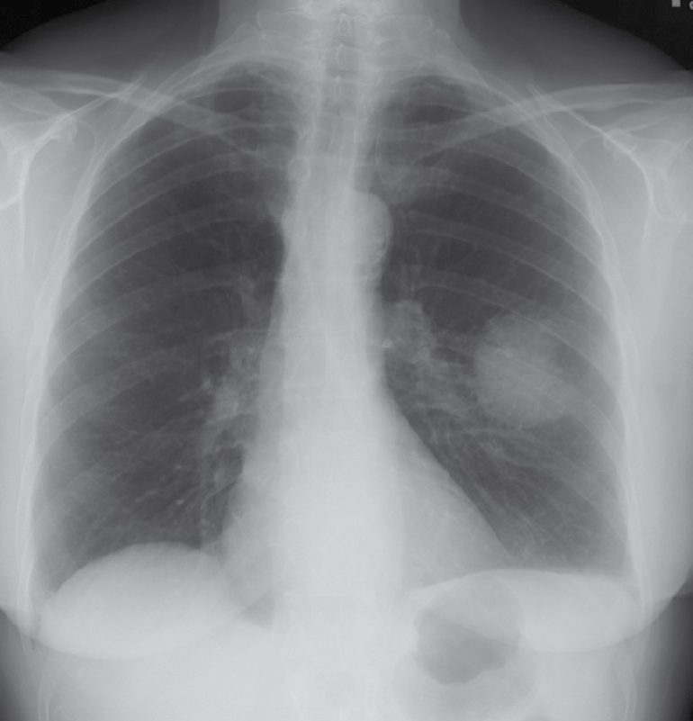
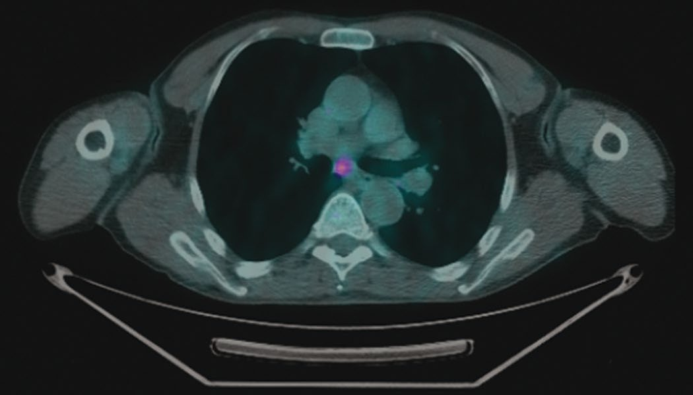
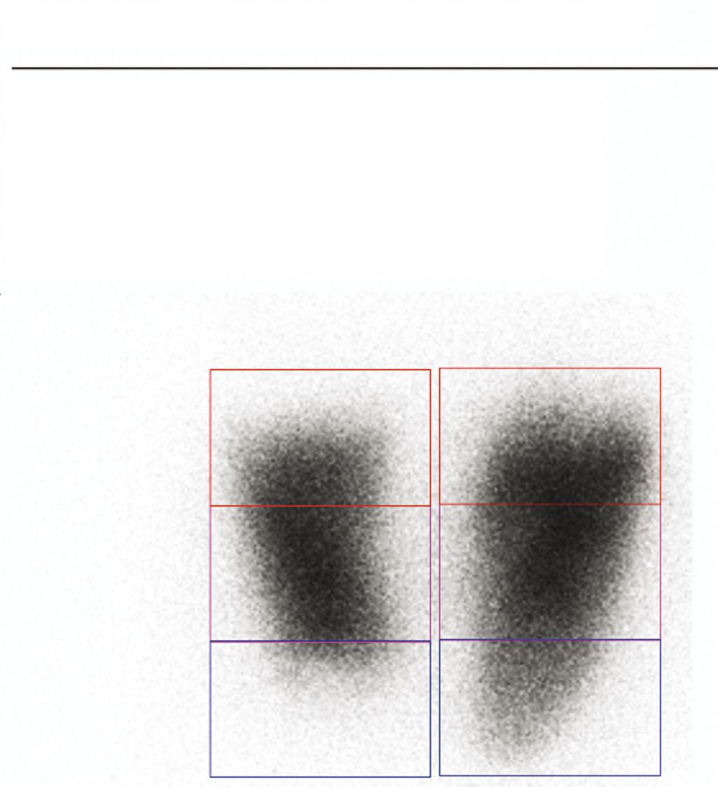

Lung Cancer
Summary
- Lung cancer is the most common cause of cancer-related death in the United States, and the decision that matters most is not whether the tumour can be removed but whether the patient can survive its removal [1].
- Two questions are asked separately: is the patient operable (the FEV1 and DLCO question) and is the tumour resectable, which turns on nodal and metastatic status [1]. Nodal involvement has the strongest influence on survival, and any N2 disease makes the tumour unresectable [1].
- This page also covers the solitary pulmonary nodule, carcinoid and bronchial adenomas, hamartoma, mesothelioma and SVC syndrome.
Definition
Non-small cell carcinoma accounts for 80% of lung cancer; small cell carcinoma for 20% [1].
A pulmonary lesion above 30 mm is considered a mass rather than a nodule [1].
Pathophysiology
The two non-small cell histologies sit in different places: squamous cell carcinoma is usually more central, adenocarcinoma more peripheral, and adenocarcinoma, not squamous, is the commonest lung cancer [1].
Small cell carcinoma is neuroendocrine in origin and usually central [1].
Paraneoplastic syndromes divide by cell type: squamous cell carcinoma produces PTH-related peptide; small cell produces ACTH and ADH, and small cell ACTH is the commonest paraneoplastic syndrome [1].
Bronchoalveolar carcinoma can look like pneumonia, growing along alveolar walls and being multifocal [1].
Clinical features
Presentation may be an incidental finding on a routine chest radiograph, or cough, haemoptysis, atelectasis, pneumonia, pain and weight loss [1].
A Pancoast tumour invades the apex of the chest wall and produces either Horner's syndrome (ptosis, miosis and anhidrosis from invasion of the sympathetic chain) or ulnar nerve symptoms [1].
SVC syndrome gives severe venous swelling of head, neck and upper limbs, and can also cause laryngeal or tracheobronchial compression [1]. It is most commonly due to lung cancer invading the SVC (small cell most often) with lymphoma second; non-malignant causes are indwelling devices such as a pacemaker lead or haemodialysis catheter, sarcoid, substernal thyroid and fibrosing mediastinitis [1]. If it is due to lung cancer the tumour is unresectable, because it has invaded the mediastinum [1].
Carcinoid is usually central, 5% have metastases at diagnosis and 50% have symptoms, cough and haemoptysis [1].
Etiology
Asbestos exposure increases lung cancer risk 90-fold [1], and is the exposure behind mesothelioma, the most malignant lung tumour, in which aggressive local invasion, nodal involvement and distant metastases are common at diagnosis [1].
For a solitary pulmonary nodule, the probability of malignancy scales with both age and size [1]:
| Feature | Malignancy risk |
|---|---|
| Age under 50 | 5% |
| Age over 50 | 50% |
| Under 5 mm | 1% |
| 5–10 mm | 10% |
| 11–20 mm | 50% |
| 21–30 mm | 70% |
The commonest nodule is a granuloma, the commonest tumour a hamartoma, and the commonest cancer lung adenocarcinoma; non-calcified lesions are more likely to be malignant [1].
Hamartoma is the commonest benign adult lung tumour, composed of fat, cartilage and connective tissue, with calcification giving a popcorn appearance on CT; the diagnosis can be made on CT, it does not require resection, and a repeat CT at 6 months confirms it [1].
Diagnosis
Chest and abdominal CT is the single best test for clinical assessment of T and N status, and the best test overall for resectability; PET is the best test for M status [1]. Brain MRI is indicated for neurological symptoms, stage III or IV disease, small cell carcinoma and Pancoast tumours [1].
Mediastinoscopy is used for centrally located tumours and suspicious adenopathy, nodes above 0.8 cm, or subcarinal nodes above 1.0 cm, on CT [1]. It assesses ipsilateral N2 and contralateral N3 mediastinal nodes, and if mediastinal nodes are positive the tumour is unresectable [1]. It does not assess the aortopulmonary window nodes, which drain the left lung [1].
The Chamberlain procedure (anterior thoracotomy or parasternal mediastinotomy through the left second rib cartilage) assesses enlarged AP window nodes [1].
Bronchoscopy is needed for centrally located tumours, to check for airway invasion [1].


Thresholds and severity
Operability
Predicted postoperative FEV1 must exceed 0.8 L, or 40% of the predicted postoperative value [1]. If it is borderline, a qualitative V/Q scan shows the contribution of the diseased lung to overall FEV1, and if that contribution is low resection may still be possible [1]. FEV1 is the best predictor of pulmonary complications and of being able to wean from the ventilator [1].
Predicted postoperative DLCO must exceed 10 mL/min/mmHg, or 40% of predicted; it measures carbon monoxide diffusion and represents oxygen exchange capacity, depending on pulmonary capillary surface area, haemoglobin content and alveolar architecture [1].
No resection if the preoperative pCO2 is above 50 or the pO2 below 60 at rest, or if VO2 max is below 10 to 12 mL/min/kg [1].

Staging
T stage is T1 for 3 cm or less; T2 for 3.1 to 5.0 cm but more than 2 cm from the carina; T3 for 5.1 to 7.0 cm, or invasion of chest wall, pericardium or diaphragm, or within 2 cm of the carina; and T4 for 7.1 cm or more (still possibly resectable) or invasion of mediastinum, oesophagus, trachea, vertebra, heart or great vessels, or a malignant effusion, which usually indicate unresectability [1].
N stage is N1 for ipsilateral hilar nodes; N2 for ipsilateral mediastinal, subcarinal or aortopulmonary window nodes, which is unresectable; and N3 for contralateral mediastinal or supraclavicular nodes, also unresectable [1]. Hilar nodal involvement does not preclude resection [1].
Screening is by annual low-dose CT [1].
It is indicated for patients aged 50 to 80 with more than a 20 pack-year smoking history who currently smoke, or who quit within the last 15 years [1].
Screening stops when the patient has not smoked for 15 years, or becomes ineligible for surgery because of comorbidity or their own preference [1].
A benign nodule needs no further workup where there has been no growth over 2 years, the contour is smooth, and there is popcorn calcification [1]. Low-risk lesions get serial chest CT, at a frequency set by clinical suspicion, starting at 3 months where there is concern, with biopsy if it grows [1].
Biopsy is indicated for suspicious lesions above 10 mm, with growth over 2 years being worrisome: bronchoscopy-guided for central lesions, CT-guided for peripheral ones, and VATS wedge resection if those fail [1]. The full cancer workup must be completed before VATS, because a frozen section showing cancer means proceeding to formal lung resection at the same sitting [1].
Treatment and Management
Treatment by stage [1]:
- Stage I and II, resection, with definitive radiotherapy if not a surgical candidate; stage II also needs postoperative chemotherapy.
- Stage IIIa, T3,N1,M0 is usually resectable, with neoadjuvant chemoradiotherapy, restaging, then resection. Any N2 disease is not resectable and gets definitive chemoradiotherapy.
- Stage IIIb, generally not resectable, though some T4,N0-1,M0 tumours can be resected after neoadjuvant chemoradiotherapy.
- Stage IIIc and IV, not resectable; definitive chemoradiotherapy.
Chemotherapy differs by cell type: carboplatin with paclitaxel for non-small cell disease at stage II or higher, and cisplatin with etoposide for small cell [1].
Small cell carcinoma is usually unresectable at diagnosis, with under 5% candidates for surgery, and most receive chemoradiotherapy alone [1].
SVC syndrome is managed by elevating the head of the bed, diuretics and hydrocortisone initially, then emergency radiotherapy if severe and malignant, with an endovascular stent if that fails; non-malignant causes go straight to stenting, with open bypass in reserve [1].
Isolated lung metastases may be resected where there is no other systemic disease, for colon, renal cell, sarcoma, melanoma, ovarian and endometrial primaries [1].
Procedural interventions
Lobectomy or pneumonectomy is the standard, since formal lung resection is required for lung cancer, with sampling of suspicious nodes; VATS resection is considered for stage I peripheral tumours without nodal or local invasion [1].
Carcinoid is resected and treated as a cancer, with outcome closely linked to histology [1].
- Bronchial adenomas are all malignant tumours.
- Carcinoid accounts for 90%; the others are mucoepidermoid adenoma, mucous gland adenoma and adenoid cystic adenoma [1].
- The first two grow slowly and do not metastasise, and are resected with a 1 cm margin; adenoid cystic adenoma arises from submucosal glands and spreads along perineural lymphatics well beyond its endoluminal component, is very radiosensitive, and can give 10-year survival even with incomplete resection [1].
Complications
The commonest complication of lung resection is atelectasis, treated with incentive spirometry [1].
Each operation has its own characteristic complication: persistent air leak is commonest after segmentectomy or wedge resection, atelectasis after lobectomy, and arrhythmia after pneumonectomy [1].
Outcomes
Overall 5-year survival in lung cancer is 10%, rising to 30% with resection for cure [1].
Small cell carcinoma has an overall 5-year survival under 5%, though T1,N0,M0 disease reaches 50% [1].
Carcinoid outcome depends on histology: 90% 5-year survival for typical carcinoid against 60% for atypical, with recurrence increased by positive nodes or a tumour above 3 cm [1].
Recurrence usually appears as disseminated metastases, and 80% occur within the first 3 years [1]. The brain is the single commonest site of metastasis, with supraclavicular nodes, the other lung, bone, liver and adrenals also involved [1]. Follow-up after resection for cure is history, examination and chest CT every 6 months for 2 years, then annually [1].
References
- The ABSITE Review, 2022, Ch. 25 Thoracic
- Sabiston Textbook of Surgery, 22nd ed., Ch. 110 Lung, Chest Wall, Pleura, and Mediastinum